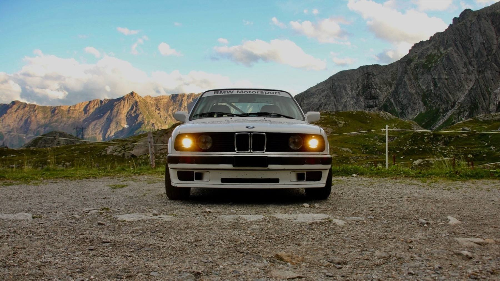
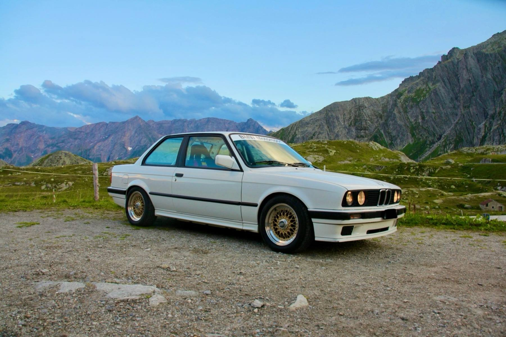
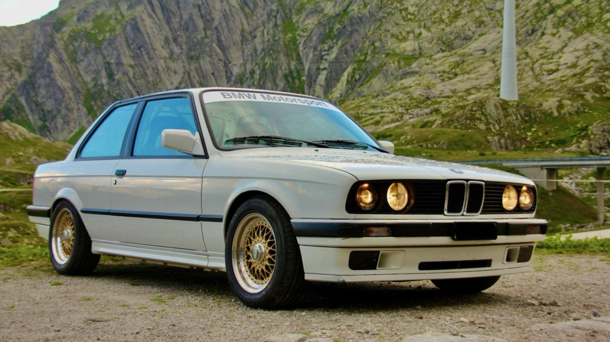
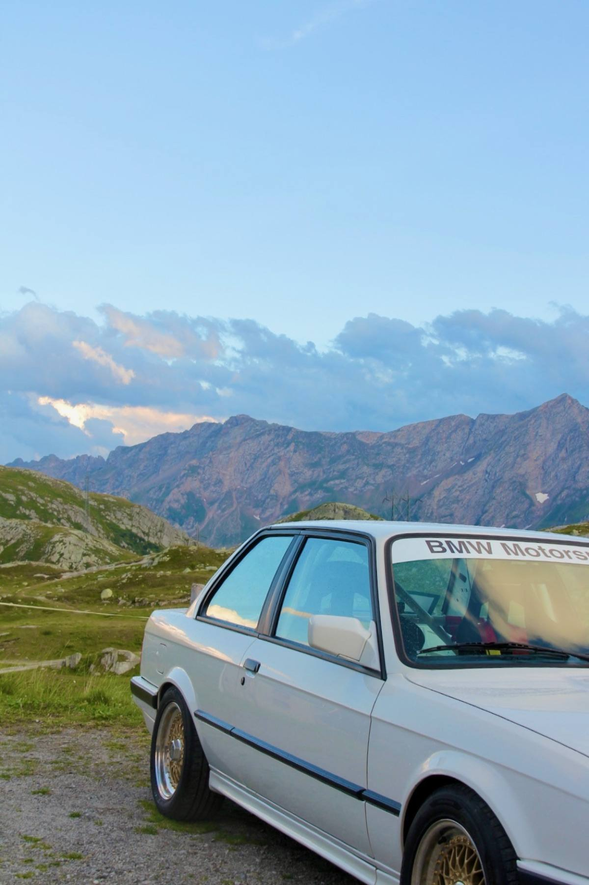

Front nach der Winterrevision

Mit 16 als halbfertiges Bergrennen-Auto mit einigen Baustellen gekauft, aktuell im Umbau für meine erste Saison.
Vollständiges Aufbau-Protokoll und Belege für Partner auf Anfrage.
Auf abgesperrten Strassen gegen die Uhr, auf Asphalt genauso wie auf Schotter. Der Beifahrer sagt jede Kurve an, bevor sie zu sehen ist — man vertraut einem Zettel und dem Menschen daneben. Jede Etappe ist anders, und keine wird zweimal gefahren.
Allein auf der Strecke, bergauf gegen die Uhr. Am Samstag wird trainiert, am Sonntag gilt es ernst — gewertet wird der schnellste Rennlauf. Es gibt keine nächste Runde, auf der sich ein Fehler noch ausbügeln lässt.


